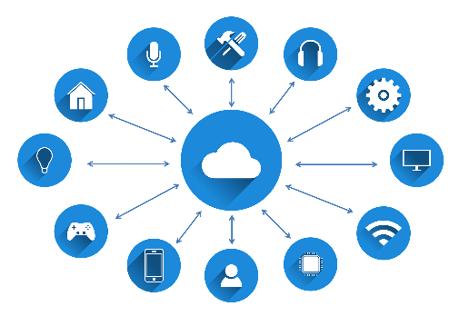
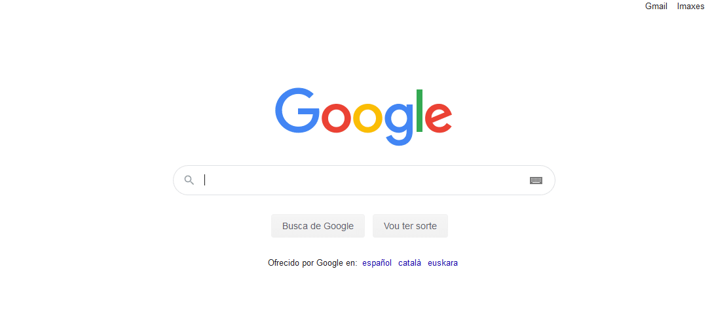
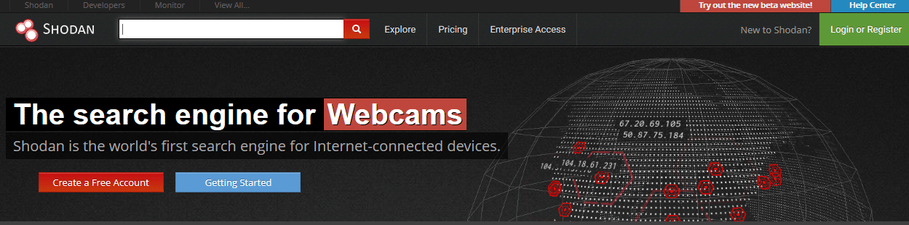
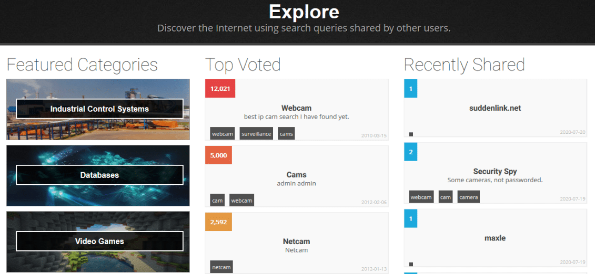
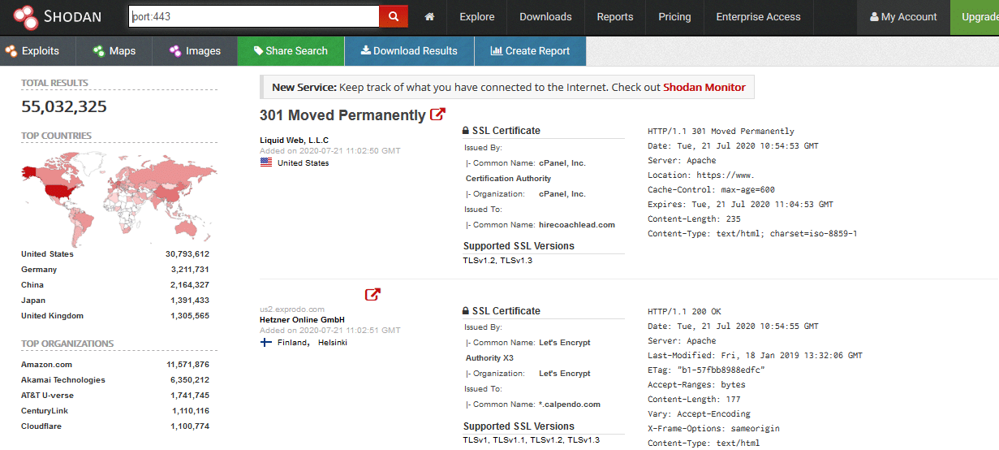
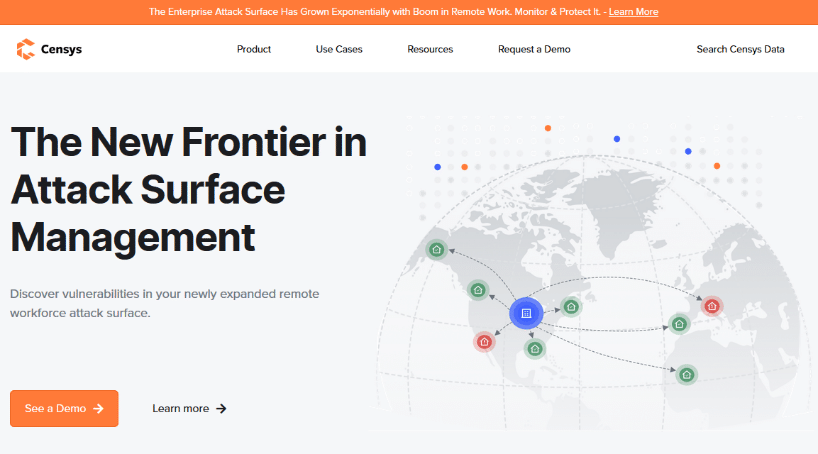
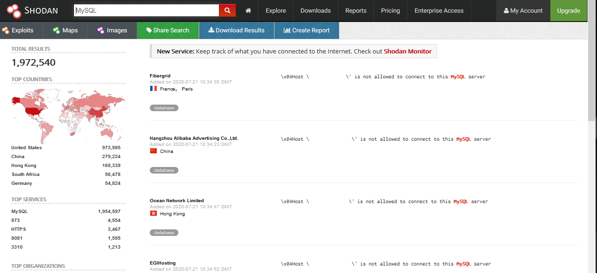
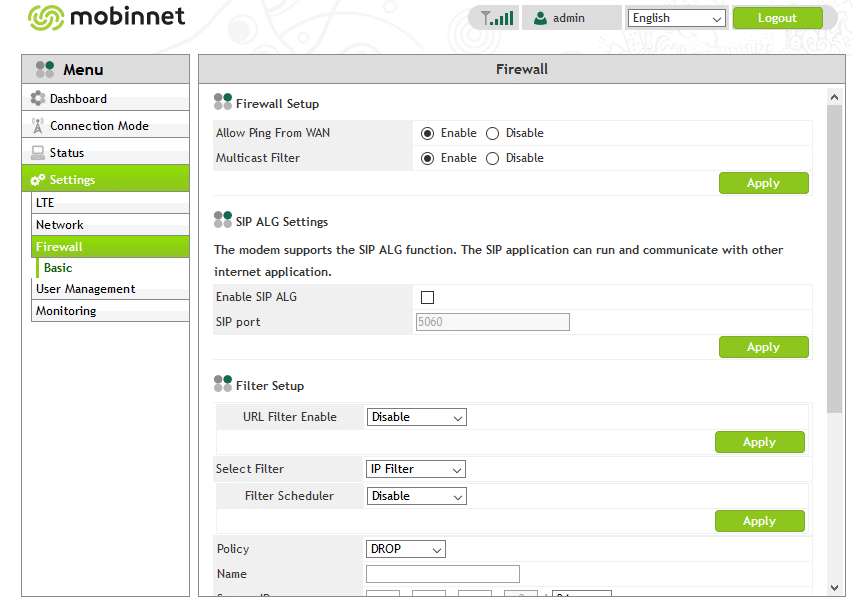

¿Qué es IoT?
IoT significa "Internet of Things" (Internet de las Cosas) y es un sistema de dispositivos de computación — máquinas mecánicas y digitales — que tienen la capacidad de transferir datos a través de una red sin requerir interacciones humano a humano o humano a computadora. Es todo aquello que puede acceder a internet y comunicarse de forma autónoma: la comunicación M2M (de máquina a máquina).

Ejemplos de dispositivos IoT: sensores de presión de ruedas, sensores de aparcamiento, frigoríficos inteligentes, sensores de humedad, etc.

Motores de búsqueda para IoT
Existen buscadores especializados que rastrean dispositivos IoT conectados a internet. Los más importantes son Shodan y Censys.
Shodan
Shodan tiene como objetivo ubicar todo tipo de dispositivos conectados a la red: routers, cámaras de seguridad, servidores, etc. Para usarlo es necesario registrarse en su web oficial.


Una de sus grandes ventajas son los filtros de búsqueda:

country:es— filtro por paíscity:Barcelona— filtro por ciudadport:443— filtro por puertoos:Linux— filtro por sistema operativohostname:google.com— filtro por dominionet:192.168.1.1— filtro por IPproduct:MySQL— filtro por producto

Mezclando estos filtros con palabras clave del objetivo se puede realizar una búsqueda muy específica. Por ejemplo, buscar "default password" muestra dispositivos con credenciales por defecto aún activas.


Censys
Censys es otro motor de búsqueda de dispositivos IoT que emergió en 2013 con el respaldo de Google. Utiliza las herramientas ZMap y ZGrab para el barrido de direcciones IPv4. Ofrece resultados con un mayor número de vulnerabilidades de dispositivos y de forma más rápida que Shodan.
Sin registro, solo permite 5 búsquedas diarias. Con cuenta, el acceso es completo.

Conclusión
Estos dos motores de búsqueda son herramientas muy potentes para obtener información sobre objetivos en la fase de reconocimiento. Su uso es totalmente legal, aunque los ciberdelincuentes también hacen uso malicioso de ellos. La diferencia está en la intención del usuario.
